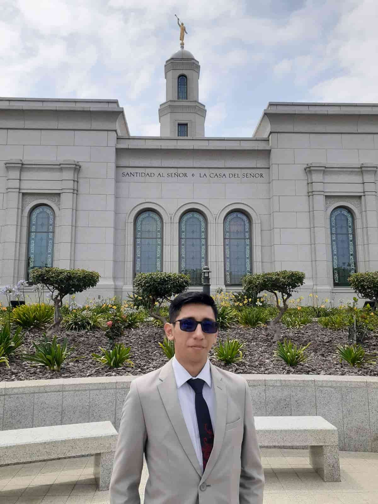

BRYAM TERRONES | WDD 130
Hi everyone
My name is Bryam Carlos Daniel Terrones Figueroa, and I am currently pursuing my studies at BYU Pathway Worldwide and the Universidad Tecnológica del Perú,
based in Chiclayo.
I am 21 years old and have a strong passion for technology, particularly in the areas of programming and computer networks.
I also enjoy listening to music, especially cumbia and pop, and I have a special love for chocolate cake and watermelon.
I am committed to continuous learning and personal growth, and I look forward to contributing meaningfully in the field of technology.
One of the things I value most is the spiritual peace I find through my beliefs. Temples are sacred places where I feel closer to God and find inspiration to live a better life. They represent dedication, love, and a commitment to eternal principles that guide my everyday choices.